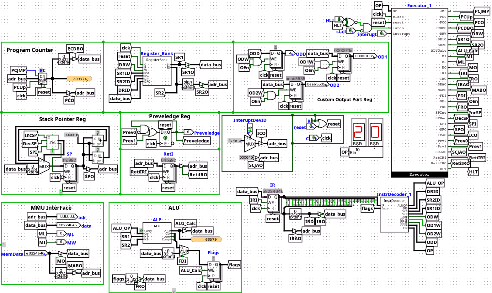

🌐 Note to Reader: Kindly visit https://sohamtilekar.github.io/Portfolio for an interactive and even better project showcase after reading this resume.
Soham Tilekar 👨💻
🚀 Systems Engineer | Compiler & Kernel Developer

📄 Professional Summary
Self-taught systems developer building foundational technology from the ground up since age 15. Passionate about deep technical challenges including custom compiler backends, hardware architecture, and kernel development. Motivated to solve complex low-level problems, optimize performance, and contribute meaningfully to the open-source ecosystem.
🌟 LFX Mentee Profile & Aspirations
Current Status
18-year-old, 2nd-Year B.Tech CSE student. Started programming before the AI boom (2020) out of genuine curiosity. Strong believer in building projects from scratch to understand underlying technology over watching tutorials. 🛠️
Goals
Aspire to build a low-level open-source programming language focused on performance, safety, and DX. Dedicated to continuous improvement through real-world architectural challenges. 🎯
Why LFX Mentorship?
Eager to learn from experienced open-source mentors and understand how large-scale collaborative projects are maintained. The stipend would critically help me upgrade from my current 4GB 6th-Gen i3 laptop 💻, significantly improving my capacity to tackle heavier system development tasks and compilations. 📈
🛠️ Technical Skills
⭐ Selected Projects
SS32 Architecture
Rust | LogisimA complete 32-bit computer system designed from logic gates up to the software toolchain. 🛠️
- Designed a custom 32-bit Instruction Set Architecture (ISA) with support for general-purpose registers, stack operations, and interrupt handling.
- Implemented core hardware components in Logisim: PC, MMU, ALU, Control Unit, Register Bank, RAM, Bus, VGA, and Interrupt controller.
- Developed a cycle-accurate emulator in Rust featuring a built-in debugger and a live memory visualizer.
- Built a custom assembler toolchain for translating proprietary mnemonics directly into binary machine code.


TilekarOS
C | x86 Assembly | QEMUA monolithic 32-bit hobbyist operating system built entirely from scratch. 🐧
- Implemented Physical Memory Management (Bitmap) and Virtual Memory Management (Identity mapping + Higher-half kernel).
- Built a preemptive round-robin scheduler, FAT12 Virtual File System (VFS), and a dynamic host-to-OS sync build tool.

Friday v2
Python | Agentic AI | Web StackA high-autonomy agentic assistant built for deep research, tool use, and system-level execution loops. 🧠
- Deep Research Loop: Uses Firecrawl to build hierarchical knowledge trees from the web.
- Computer Access: Local sandboxed terminal for file management and code execution.
- Branching History: Supports non-linear chat paths, allowing users to "rewind" and explore.
- Multi-modal: Integrated with Gemini 1.5 Pro and Imagen for analysis and generation.
GigglyCode
C++ | LLVM 17+A compiled systems language designed to bridge C/C++ performance with Python-like flexibility. ⚡
- Implemented a full front-end: Recursive-descent parser for AST generation, semantic analysis for type checking/inference, and an LLVM backend for code generation.
- Features robust memory ownership rules, generic structs (using
@genericdecorators), and module importing. - Utilizes LLVM optimization passes to ensure the generated machine code is highly performant and competitive with native C++ binaries.
# Define a generic struct for a linked list node
@generic(T: Any)
struct ListNode {
value: T; # Generic value
next: ListNode[T]; # Pointer to next node
# Constructor to initialize the node
def __init__(self: ListNode[T], val: T) -> void {
self.value = val;
self.next = nullptr;
};
};
# Instantiate generic type
node: ListNode[int] = new ListNode(42);Berus Browser
Rust | eguiA lightweight web browser engine implemented without using WebKit, Blink, or Gecko. 🌐
- Wrote custom, stateful parsers for HTML (DOM tree generation) and CSS (rule sets).
- Implemented a layout engine calculating CSS specificity, cascade, and complex block positioning rendering via egui, including support for units like
em,rem, and%. - Integrated the
rodiolibrary for multimedia to handle<audio>tags and background playback.

Note: Additional projects (including Web Apps, VidioPy, etc.) are available on my GitHub Profile.
🌍 Open Source Activity
Actively maintaining and sharing full-stack system projects on GitHub since 2023. Dedicated to publishing well-documented toolchains, emulators, and compilers to help others learn complex low-level concepts by reading practical, from-scratch implementations. Continuously learning by exploring real-world large-scale repositories.
🎓 Education
B.Tech in Computer Science Engineering
Pimpri Chinchwad University, Pune
August 2024 - July 2028 (3rd Semester)
🌐 Note to Reader: Kindly visit https://sohamtilekar.github.io/Portfolio for an interactive and even better project showcase after reading this resume.